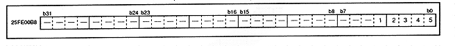

Table 3.23 Spare space bus size settings
A3SZ | Bus size setting |
0 | Specify 16 bit bus |
1 | Specify 8 bit bus |
Figure 3.30 A-Bus refresh register (register: AREF) initial value 00000000H

Table 3.24 A-Bus refresh wait count
bit | Number of waits | |||||||||||||||||||
ARWT3 | ARWT2 | ARWT1 | ARWT0 | |||||||||||||||||
0 | 0 | 0 | Do not wait | |||||||||||||||||
0 | 0 | 0 | 1 cycle wait | |||||||||||||||||
: | : | : | : | | ||||||||||||||||
1 | 1 | 1 | 14 cycle wait | |||||||||||||||||
1 | 1 | 1 | 15 cycle wait |